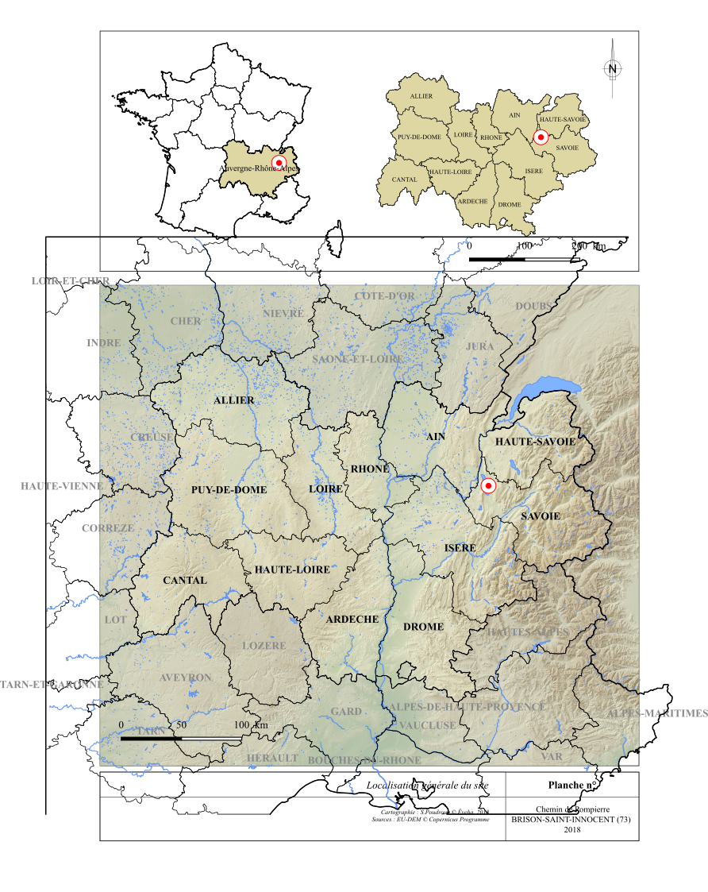
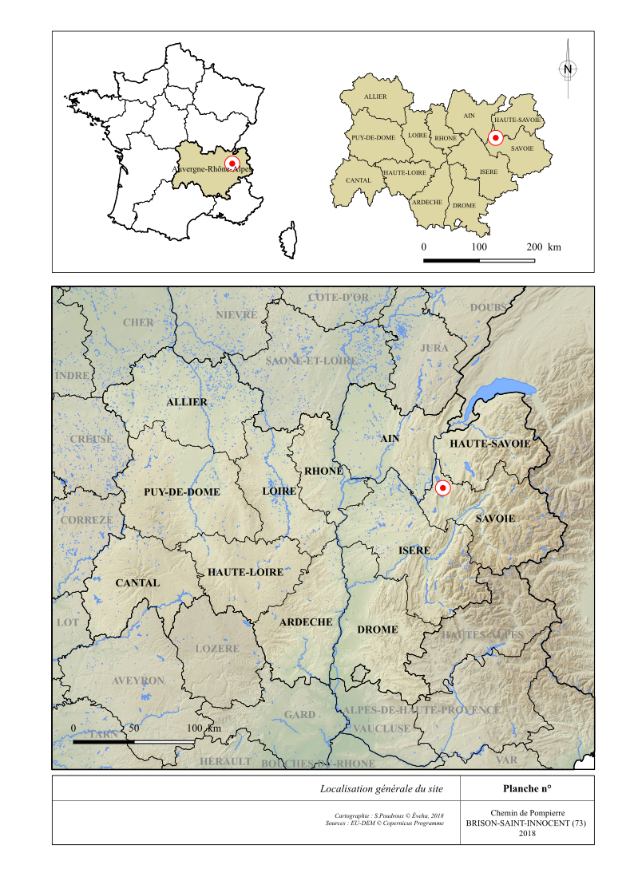

Cut2SVG plugin documentation¶
Presentation¶
It happens quite often to encounter a bug in the SVG export of a print composer, causing the creation of a map with vectors overflowing their frame.
This occurs when in the composer, the user-defined frame or scale of the map does not cover the entire footprint of the selected vector layers.
Example of a bug when exporting Qgis SVG :
{kind=link}
This plugin has been designed to overcome this problem and avoid a post-processing in a vector graphics editor.
SVG export with Cut2SVG :
{kind=link}
Prerequisites¶
The CRS of the layers to be cut must be identical to the CRS of the project.
If this is not the case, the plugin will display an alert message.
Also check the validity of the geometries of the vector layers.
In case of invalidity, the plugin will display the name of the layers concerned and their number of errors.
Operation¶
- Check that all layers (vector as raster) in the composer are enabled in the main Qgis interface.
- Select the print composer and map you want to work on. The plugin displays the coordinates of the footprint of the selected map and opens the composer concerned. A zoom is made in the canvas on the corresponding right-of-way, delimited by a blue rectangle, making it easier to find your way in the choice of the map.
{kind=link}
- Specify an export folder, then start the process.
The relevant vector layers will then be duplicated and cut by a temporary polygon corresponding to the footprint of the selected map in the print composer.
In the interface, these new layers will be found in a new group called “Cut2SVG”.
Finally, the original vector layers will be disabled while their cut clones will resume their symbology.
The composer will be updated for direct viewing of the result.
{kind=link}
It will only remain to export the composer in SVG.
Source code¶
The source code is available at the following address :